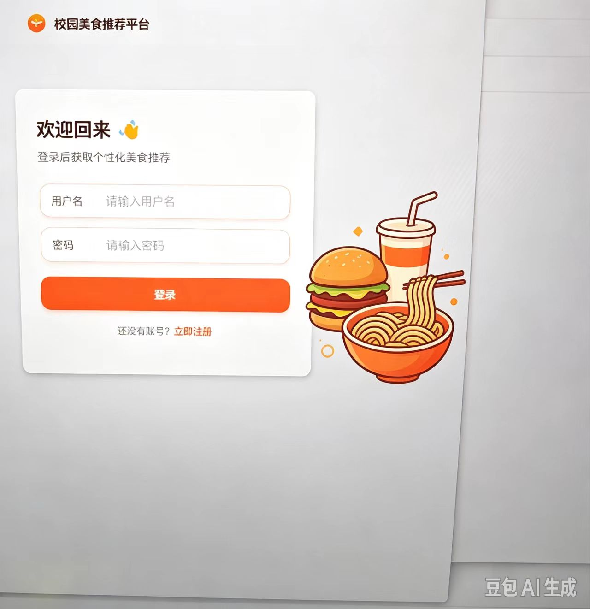
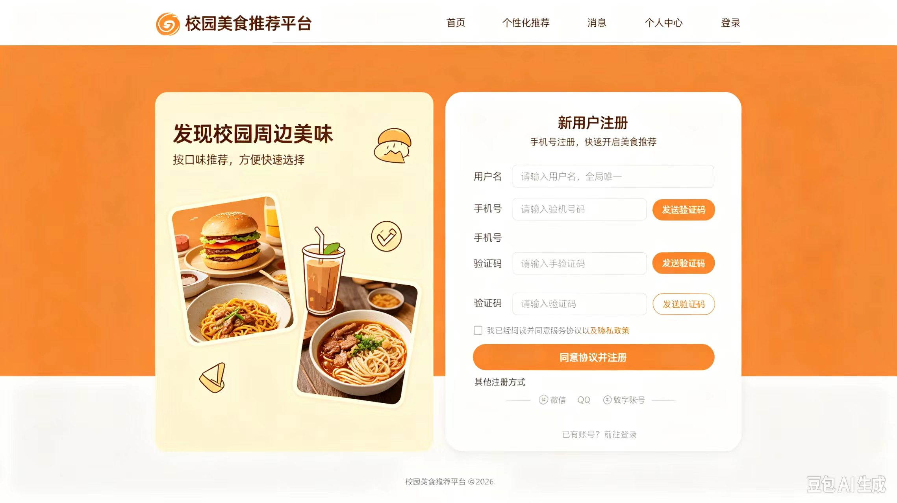
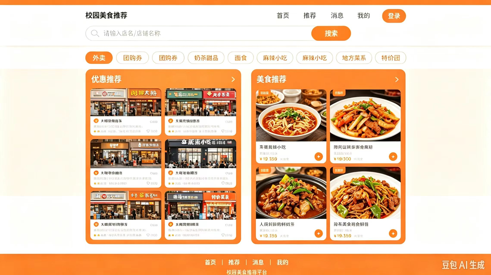
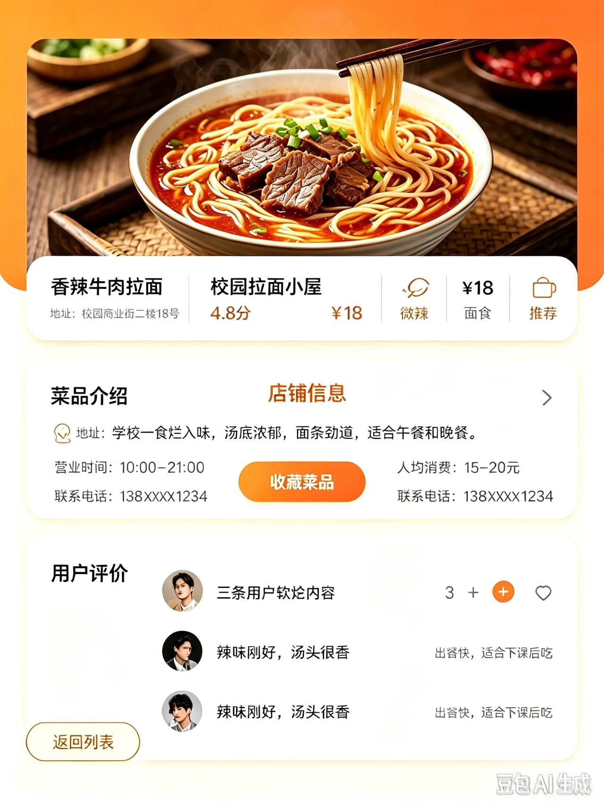
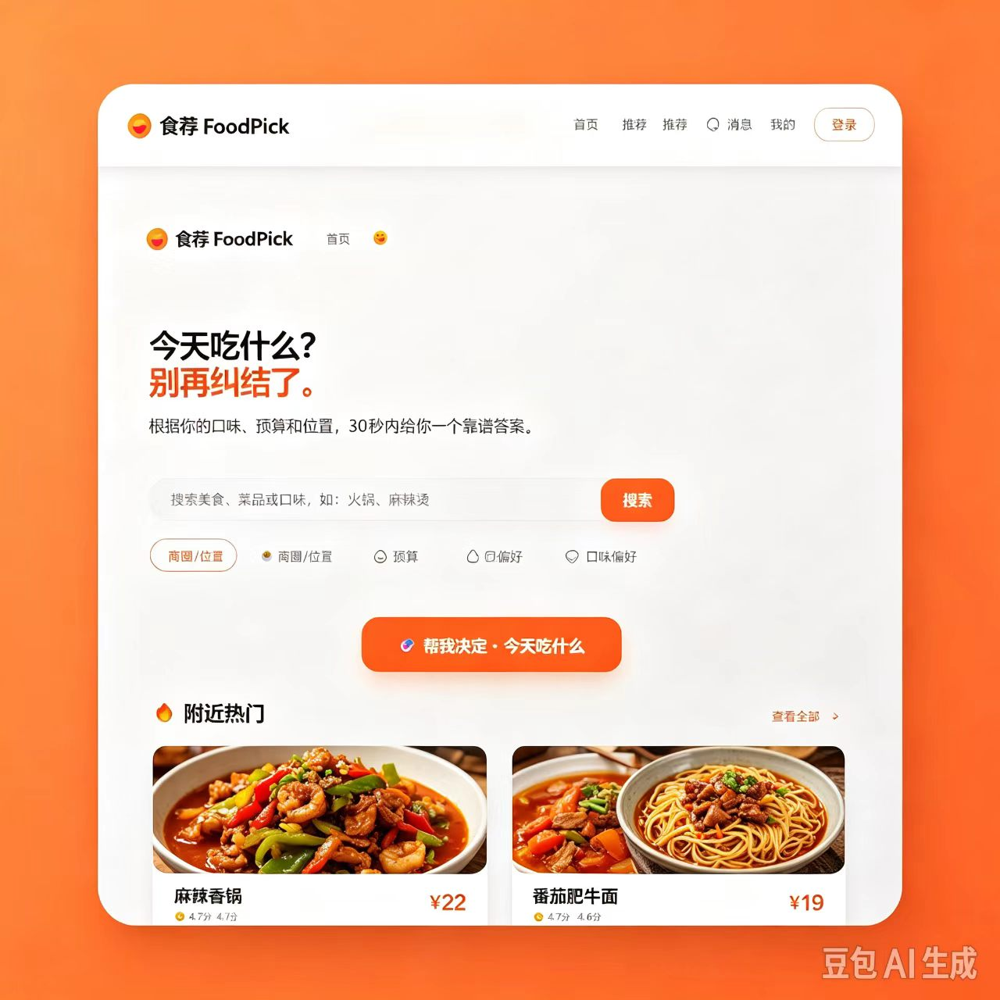
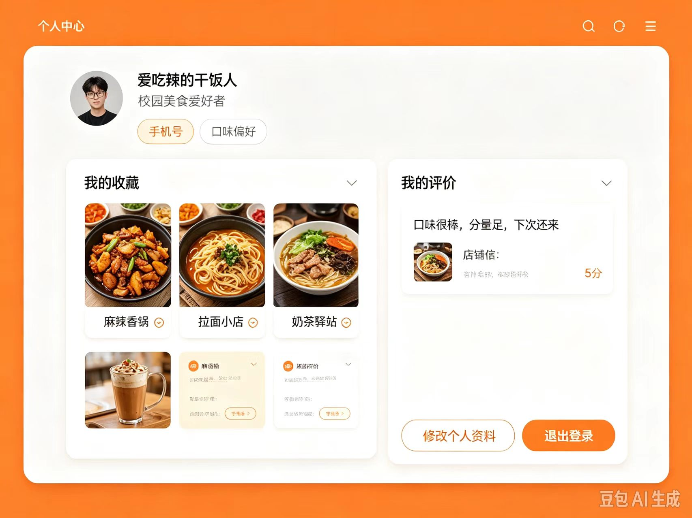

校园美食推荐平台 —— 低保真线框图（Wireframe）
对应需求文档：需求文档.md v1.1 ｜ 技术形态：B/S 架构 Web 应用（浏览器访问，适配 1366px+）
| 项目 | 统一规则 |
|---|---|
| 终端形态 | 全部 6 页统一为 Web 端（浏览器访问，适配 1366px 及以上分辨率） |
| 顶部导航 | 🍜 校园美食推荐平台 + 首页 / 餐厅列表 / 个性化推荐 / 个人中心 + 右侧 登录（登录后显示头像） |
| 底部页脚 | 校园美食推荐平台 ©2026 |
| 注册字段 | 用户名、密码、确认密码、邮箱、昵称（与需求文档 F-USER-01 一致，不含手机验证码） |
| 不做的功能 | 不做"消息"模块、不做"订单"业务——导航与页面中均不出现 |
| 页面范围 | 本版本原型共 6 个页面：登录、注册、首页、菜品/餐厅详情、个性化推荐、个人中心（不含独立的餐厅列表页） |
| 主要配色 | 主色 暖橙 #ff7a18；网页底色 浅灰 #f7f7f7；卡片 白色圆角 |
Web 端用户输入用户名、密码登录，登录成功签发 Token。
┌──────────────────────────────────────────────────────────┐ │ 🍜 校园美食推荐平台 首页 餐厅列表 个性化推荐 个人中心 [登录] │ ├──────────────────────────────────────────────────────────┤ │ │ │ ┌─────────────────────┐ ┌───────────────────┐ │ │ │ 欢迎回来 👋 │ │ │ │ │ │ 登录后获取个性化推荐 │ │ 美食装饰插画 │ │ │ │ │ │ （拉面 / 汉堡 / 饮料）│ │ │ │ 用户名 │ │ │ │ │ │ [ 请输入用户名 ] │ │ │ │ │ │ │ │ │ │ │ │ 密码 │ │ │ │ │ │ [ 请输入密码 ] │ │ │ │ │ │ │ │ │ │ │ │ [ 登 录 ] │ │ │ │ │ │ │ │ │ │ │ │ 还没有账号？立即注册 │ │ │ │ │ └─────────────────────┘ └───────────────────┘ │ │ │ ├──────────────────────────────────────────────────────────┤ │ 校园美食推荐平台 ©2026 │ └──────────────────────────────────────────────────────────┘

Web 端新用户注册，字段与需求文档一致：用户名 / 密码 / 确认密码 / 邮箱 / 昵称。
┌──────────────────────────────────────────────────────────┐ │ 🍜 校园美食推荐平台 首页 餐厅列表 个性化推荐 个人中心 [登录] │ ├──────────────────────────────────────────────────────────┤ │ ┌─────────────────────┐ ┌───────────────────┐ │ │ │ 发现校园周边美味 │ │ 新用户注册 │ │ │ │ 按口味推荐，快速选择 │ │ 注册后开启美食推荐 │ │ │ │ │ │ │ │ │ │ 美食装饰图集 │ │ 用户名 │ │ │ │ （汉堡 / 炒面 / 牛肉面） │ │ [ 4-20位，全局唯一 ]│ │ │ │ │ │ 密码 │ │ │ │ │ │ [ 6-50位 ]│ │ │ │ │ │ 确认密码 │ │ │ │ │ │ [ 再次输入密码 ]│ │ │ │ │ │ 邮箱 │ │ │ │ │ │ [ example@qq.com ]│ │ │ │ │ │ 昵称 │ │ │ │ │ │ [ 怎么称呼你 ]│ │ │ │ │ │ ☐ 我已阅读并同意服务协议 │ │ │ │ │ │ [ 注 册 ]│ │ │ │ │ │ 已有账号？前往登录 │ │ │ └─────────────────────┘ └───────────────────┘ │ ├──────────────────────────────────────────────────────────┤ │ 校园美食推荐平台 ©2026 │ └──────────────────────────────────────────────────────────┘

Web 端搜索 + 分类筛选 + 优惠推荐 / 美食推荐双栏内容。
┌──────────────────────────────────────────────────────────┐ │ 🍜 校园美食推荐平台 首页 餐厅列表 个性化推荐 个人中心 [登录] │ ├──────────────────────────────────────────────────────────┤ │ [ 🔍 搜索店名 / 菜品名称 ] [ 搜 索 ] │ ├──────────────────────────────────────────────────────────┤ │ 分类： [麻辣烫] [面食] [奶茶甜品] [快餐] [地方菜系] [特价团] │ ├────────────────────────────┬─────────────────────────────┤ │ 优惠推荐 > │ 美食推荐 > │ │ ┌────────┐ ┌────────┐ │ ┌────────┐ ┌────────┐ │ │ │ 店铺图 │ │ 店铺图 │ │ │ 菜品图 │ │ 菜品图 │ │ │ │ 老王麻辣烫│ │ 校园拉面屋│ │ │ 麻辣香锅 │ │ 番茄肥牛面│ │ │ │ ⭐4.7 │ │ ⭐4.8 │ │ │ ¥22 ⊕ │ │ ¥19 ⊕ │ │ │ └────────┘ └────────┘ │ └────────┘ └────────┘ │ │ ┌────────┐ ┌────────┐ │ ┌────────┐ ┌────────┐ │ │ │ 店铺卡片 │ │ 店铺卡片 │ │ │ 菜品卡片 │ │ 菜品卡片 │ │ │ └────────┘ └────────┘ │ └────────┘ └────────┘ │ │ （共 6 个店铺卡片） │ （共 4 个菜品卡片） │ ├────────────────────────────┴─────────────────────────────┤ │ 校园美食推荐平台 ©2026 │ └──────────────────────────────────────────────────────────┘

Web 端展示餐厅与菜品信息、用户评价，可收藏。
┌──────────────────────────────────────────────────────────┐ │ 🍜 校园美食推荐平台 首页 餐厅列表 个性化推荐 个人中心 [登录] │ ├──────────────────────────────────────────────────────────┤ │ ┌──────────────────┐ 香辣牛肉拉面 │ │ │ 餐厅 / 菜品大图 │ 校园拉面小屋 · ⭐4.8 · ¥18 │ │ └──────────────────┘ [面食] [微辣] [❤ 收藏菜品] │ ├──────────────────────────────────────────────────────────┤ │ [ 菜品介绍 ] [ 店铺信息 ] │ │ ────────────────────────────────────────────────── │ │ 菜品描述：牛肉软烂入味，汤底浓郁，面条劲道，适合午餐晚餐。 │ │ 地址 ：校园商业街二楼18号 │ │ 营业时间：10:00 - 21:00 │ │ 联系电话：138****1234 │ │ 人均消费：15 - 20 元 │ ├──────────────────────────────────────────────────────────┤ │ 用户评价 │ │ 👤 小明：辣味刚好，汤头很香，出餐快，适合下课后吃。 ⭐5 │ │ 👤 小红：分量足，面条劲道，性价比高。 ⭐4 │ │ 👤 阿杰：味道不错，就是等位有点久。 ⭐4 │ ├──────────────────────────────────────────────────────────┤ │ [ 返回列表 ] │ ├──────────────────────────────────────────────────────────┤ │ 校园美食推荐平台 ©2026 │ └──────────────────────────────────────────────────────────┘

Web 端根据用户口味、预算给出推荐结果，含推荐理由与得分。
┌──────────────────────────────────────────────────────────┐ │ 🍜 校园美食推荐平台 首页 餐厅列表 个性化推荐 个人中心 [登录] │ ├──────────────────────────────────────────────────────────┤ │ 今天吃什么？别再纠结了。 │ │ 根据你的口味、预算，30 秒给你一个靠谱答案。 │ │ [ 搜索美食、菜品或口味，如：火锅、麻辣烫 ] [ 搜索 ] │ │ 筛选： [位置 ▾] [预算 ▾] [偏好 ▾] [口味偏好 ▾] │ │ [ 🎲 帮我决定 · 今天吃什么 ] │ ├──────────────────────────────────────────────────────────┤ │ 🔥 附近热门 查看全部 > │ │ ┌──────────┐ ┌──────────┐ │ │ │ 麻辣香锅图 │ │ 番茄肥牛面 │ │ │ │ 麻辣香锅 │ │ 番茄肥牛面 │ │ │ │ ¥22 ⭐4.7 │ │ ¥19 ⭐4.6 │ │ │ └──────────┘ └──────────┘ │ ├──────────────────────────────────────────────────────────┤ │ 为我推荐（按得分排序） │ │ ┌──────────┐ ┌──────────┐ ┌──────────┐ │ │ │ 推荐卡片 1 │ │ 推荐卡片 2 │ │ 推荐卡片 3 │ │ │ │ 得分 0.92 │ │ 得分 0.87 │ │ 得分 0.81 │ │ │ │ 理由：口味合│ │ 理由：预算合│ │ 理由：高分 │ │ │ └──────────┘ └──────────┘ └──────────┘ │ ├──────────────────────────────────────────────────────────┤ │ 校园美食推荐平台 ©2026 │ └──────────────────────────────────────────────────────────┘

Web 端查看个人信息、我的收藏、我的评价，可维护口味偏好。
┌──────────────────────────────────────────────────────────┐ │ 🍜 校园美食推荐平台 首页 餐厅列表 个性化推荐 个人中心 [头像] │ ├──────────────────────────────────────────────────────────┤ │ 👤 爱吃辣的干饭人 校园美食爱好者 │ │ 手机号 ｜ 口味偏好 │ ├────────────────────────────┬─────────────────────────────┤ │ 我的收藏 > │ 我的评价 > │ │ ┌────┐┌────┐┌────┐ │ ┌─────────────────────┐ │ │ │麻辣香锅││拉面小店││奶茶驿站│ │ │ 口味很棒，分量足 │ │ │ └────┘└────┘└────┘ │ │ 校园拉面小屋 ⭐5 │ │ │ ┌────┐ │ └─────────────────────┘ │ │ │奶茶饮品│ │ ┌─────────────────────┐ │ │ └────┘ │ │ 味道不错，会再来 │ │ │ │ │ 老王麻辣烫 ⭐4 │ │ │ │ └─────────────────────┘ │ │ │ [修改个人资料] [退出登录] │ ├────────────────────────────┴─────────────────────────────┤ │ 校园美食推荐平台 ©2026 │ └──────────────────────────────────────────────────────────┘

| 序号 | 页面 | 对应需求功能编号 |
|---|---|---|
| 1 | 登录页 login | F-USER-02 登录 |
| 2 | 注册页 register | F-USER-01 注册 |
| 3 | 首页 index | F-REST-01 餐厅列表、F-REST-03 关键词搜索 |
| 4 | 详情页 detail | F-REST-02 餐厅详情、F-REV-02 查看评价、F-FAV-01 收藏 |
| 5 | 个性化推荐页 recommend | F-REC-01 个性化推荐 |
| 6 | 个人中心 profile | F-FAV-03 我的收藏、F-USER-03 个人信息、F-USER-05 维护偏好 |
— 文档结束 —